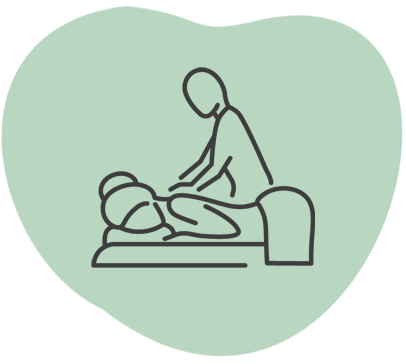
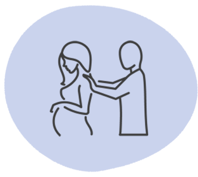
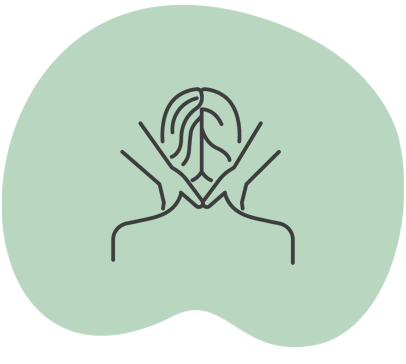
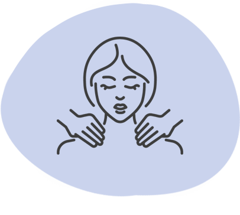

Helanova
Helanova
För dig.
För din kropp.
Efter dina behov.
Från en stunds återhämtning till massage med fokus på dina muskelbesvär. Hos oss börjar behandlingen med dig.
Hitta din behandlingHitta din behandling.
Ta en titt på våra behandlingar. Du behöver inte veta exakt vad du ska välja – vi hjälper dig gärna.

Massage
Vi kombinerar olika massagetekniker utifrån dina behov och önskemål.
Läs mer
Avslappning
En mjukare massage för dig som vill varva ner och ta en paus.
Läs mer
Terapeutisk gravidmassage
Massage som anpassas efter dig och din kropp under graviditeten.
Läs mer
Lymfmassage
En behandling med lätta strykningar, mjuka tryck och andning.
Läs mer
Fascia Vibes Therapy
Fasciabehandling med pulserande vibrationer och manuella tekniker.
Läs mer
Myofascial Energetic Release
MER är en form av kroppsbehandling med fokus på fascia och beröring.
Läs mer
Somatic Experiencing
Ett kroppsorienterat arbetssätt med uppmärksamhet på kroppens signaler.
Läs mer
Friskvård och försäkring
Läs om kvitto, friskvårdsbidrag och hur du kommer i kontakt med oss.
Läs merSvårt att välja? Berätta vad du söker, så hjälper vi dig →
Massage
Vi kombinerar olika massagetekniker utifrån dina behov och önskemål.
Boka massage Alla behandlingar ↑Vi erbjuder massage där vi kombinerar tekniker som klassisk svensk massage, deep tissue och fasciabehandling för att möta dina specifika behov. Vid ditt första besök, välj gärna alternativet ”nybesök” så börjar vi med en konsultation inklusive genomgång av anamnes och relevanta tester för att skapa en individuellt anpassad behandlingsplan som ger bästa möjliga resultat.
Läs mer om våra olika tekniker nedan.
Tekniker vi använder
Svensk klassisk massage
Klassisk svensk massage är en beprövad behandlingsmetod som kombinerar knådningar, strykningar och tryck för att minska muskelspänningar, öka blodcirkulationen och främja avslappning. Denna massageform kan anpassas både för avkoppling och för att behandla specifika problemområden, vilket gör den idealisk för allmän hälsa och välbefinnande.
Triggerpunktsbehandling
Triggerpunktsbehandling är en effektiv metod för att lindra smärta och spänningar i musklerna. Genom att använda specifikt tryck på triggerpunkter – små, ömma knutor i musklerna – hjälper behandlingen till att minska spänningar och återställa normal muskelaktivitet. Behandlingen är särskilt användbar för områden som ofta ger upphov till strålande smärta, som huvud, nacke och armar.
Läs mer om triggerpunkter här →
Koppningsmassage
Koppning är en alternativ behandlingsmetod som använder vakuum för att lyfta hud och bindväv, vilket främjar djupgående återhämtning. Med rötter i traditionell läkekonst har koppning använts i århundraden och är idag en populär behandling världen över.
Genom att skapa ett undertryck med sugkoppar stimuleras blod- och lymfcirkulationen, vilket hjälper till att transportera bort slaggprodukter från bindväven. Koppning kan effektivt öka blodflödet, minska muskelspänningar och bidra till kroppens naturliga läkningsprocess, vilket gör metoden både kraftfull och avslappnande.
Stretching / muskeltöjning
Terapeutisk stretch är en behandlingsmetod som fokuserar på att förbättra rörlighet, minska muskelspänningar och främja återhämtning. Genom assisterad stretching hjälper terapeuten till att förlänga muskler och bindväv, vilket ökar flexibiliteten och lindrar stelhet. Stretchning används oftast som ett komplement för att förstärka massagens resultat.
Deep tissue massage
Deep tissue-massage är utformad för att lindra djupa spänningar i muskler och bindväv, även kallad fascia. Denna massageform fokuserar på de underliggande musklerna, bortom de ytliga lagren. Deep tissue-massage rekommenderas ofta för personer med kronisk smärta, de som är fysiskt aktiva (till exempel idrottare) och för patienter som har drabbats av fysisk skada. Det är inte ovanligt att uppleva en viss muskelvärk under en dag eller två efter behandlingen, då kroppen anpassar sig.
Behandlingen är individuellt anpassad och fungerar bäst med en plan på 3–5 sessioner för optimalt resultat.
Avslappningsmassage
Avslappningsmassage, även kallad ”taktil massage”, är en lugnande och mjuk behandlingsform som syftar till att minska stress och öka välbefinnandet. Med lätta, rytmiska rörelser stimuleras kroppens avslappningssystem, vilket främjar återhämtning och en känsla av ro. Eftersom fokus inte ligger på djupbehandling av specifika problemområden, kan massagen täcka större delar av kroppen efter dina önskemål.
Denna behandling är idealisk för dig som vill koppla av, reducera spänningar och ge kroppen en paus från vardagens krav. Utöver att sänka stressnivåerna kan avslappningsmassage bidra till bättre sömn, förbättrad cirkulation och en känsla av balans i både kropp och sinne. Perfekt för dig som vill prioritera din egen återhämtning och välmående.
Avslappning
En mjukare massage för dig som vill varva ner och ta en paus.
Boka tid Alla behandlingar ↑Avslappningsmassage, även kallad ”taktil massage”, är en lugnande och mjuk behandlingsform som syftar till att minska stress och öka välbefinnandet. Med lätta, rytmiska rörelser stimuleras kroppens avslappningssystem, vilket främjar återhämtning och en känsla av ro. Eftersom fokus inte ligger på djupbehandling av specifika problemområden, kan massagen täcka större delar av kroppen efter dina önskemål. Den här behandlingsmetoden kan därför användas för kunder som har fibromyalgi.
Denna behandling är idealisk för dig som vill koppla av, reducera spänningar och ge kroppen en paus från vardagens krav. Utöver att sänka stressnivåerna kan avslappningsmassage bidra till bättre sömn, förbättrad cirkulation och en känsla av balans i både kropp och sinne. Perfekt för dig som vill prioritera din egen återhämtning och välmående.

Terapeutisk gravidmassage
Massage som anpassas efter dig och din kropp under graviditeten.
Boka tid Alla behandlingar ↑Terapeutisk gravidmassage är en skonsam och effektiv behandling för gravida som upplever besvär som:
- Smärtor i rygg, nacke & skuldror.
- Gravidischias och smärtor i sätet.
- Karpaltunnelsyndrom, ödem i ben & fötter.
- Smärta från muskel- och nervsjukdomar.
- Foglossningar och bäckenproblem.
- Migrän – all slags huvudvärk.
- Ont i svanskotan.
- Eller om du bara behöver en välgörande stund för dig själv och din kropp.
Genom att kombinera traditionell massage med avancerad fasciateknik så kan även andra smärttillstånd, som inte är direkt relaterade till graviditeten, behandlas effektivt. Vid behov kombineras behandlingen med träningsråd för att stärka upp bäckenbotten och förebygga problem. Detta helhetsinriktade tillvägagångssätt främjar avslappning och bidrar till en mer behaglig graviditetsupplevelse.
Hos oss får du en professionell, trygg och bekväm behandling anpassad för just dig under hela din graviditet!
Lymfmassage
En behandling med lätta strykningar, mjuka tryck och andning.
Boka tid Alla behandlingar ↑Lymfmassage är en behandling som passar alla, men är särskilt effektiv för dig som upplever ödem, fibromyalgi, lipödem, restless legs, trötthetssyndrom, hormonella obalanser eller en allmän känsla av svullnad. Behandlingen är även fördelaktig efter operationer, vid stress, ångest eller om lymfsystemet känns trögt.
Ett trögt lymfsystem kan orsakas av stress, gamla skador, hormonella obalanser, intensiv träning eller inaktivitet. Lymfsystemet fungerar som kroppens reningsverk, som rensar bort slaggprodukter, bakterier och virus från bindväven. När lymfflödet är svagt kan kroppen samla på sig vätska och toxiner, vilket kan påverka hälsan.
Lymfmassage kombinerar lätta strykningar i lymfvätskans riktning, djupandning och mjuka tryck för att stimulera flödet. Vissa djupare grepp används för att lösa upp fibroser och blockeringar, vilket främjar både cirkulation och välmående.
Fascia Vibes Therapy
Fasciabehandling med pulserande vibrationer och manuella tekniker.
Boka tid Alla behandlingar ↑Fascia Vibes Therapy är en unik och kraftfull helkroppsbehandling som utförs med tunna kläder på, vilket gör den både bekväm och avkopplande. Behandlingen fokuserar på kroppens fascia – det nätverk av bindväv som omsluter och sammanlänkar muskler, organ och nerver. Fascia har en central roll i vår kroppsliga balans och rörelseförmåga, men kan bli stel och smärtsam på grund av stress, belastning eller skador.
Med hjälp av mjuka, pulserande vibrationer hjälper behandlingen till att frigöra spänningar, öka blodcirkulationen och återställa fascians naturliga elasticitet. Detta kan hjälpa till att förbättra följande problem:
- Muskelspänningar och stelhet
- Rygg- och nacksmärta
- Kronisk smärta och värk
- Begränsad rörlighet
- Ledvärk
- Stress
- Smärta orsakad av överansträngning eller monotont arbete
Fascia Vibes Therapy kombineras med manuella tekniker för att skräddarsy behandlingen efter dina unika behov och fungerar bäst med en plan på 3–5 sessioner för optimalt resultat. Denna metod skapar en heltäckande och djupt avslappnande upplevelse som inte bara lindrar smärta utan även hjälper kroppen att återfå sin naturliga balans och smidighet.
Myofascial Energetic Release
MER är en form av kroppsbehandling med fokus på fascia och beröring.
Boka tid Alla behandlingar ↑Myofascial Energetic Release (MER), utvecklad av Satyarthi Peloquin, är en djupgående och integrerad metod inom modern kroppsterapi. Tekniken fokuserar på att frigöra spänningar i kroppens myofascia och har visat sig effektiv för att lindra både akuta och kroniska smärtor, samtidigt som den adresserar emotionell och mental stress.
När vi upplever stress, smärta eller trauma så drar fascian ihop sig och kan därmed stanna kvar i ett spänt läge, trassla ihop sig och stagnera i ett visst område. Detta påverkar hela fasciasystemet i kroppen och kan orsaka kronisk smärta. Forskning har visat att ca 90 % av all kronisk smärta härstammar från fascian.
MER är en kraftfull behandling som kombinerar närvaro och beröring för att hjälpa individen att återfå kontakt med sin kropp, minska smärta och uppnå inre lugn. Den används världen över för att lindra smärta, korrigera obalanser, och behandla stagnation, lidande och trauma.
Specifika förbättringar
- Bättre sömn
- Ökad rörlighet
- Ökad energi
- Mindre smärta i kroppen
- Minskar inflammation
- Minskar stress både i kroppen och sinnet
- Bättre muskelfunktion
- Lugnare nervsystem
Somatic Experiencing
Ett kroppsorienterat arbetssätt med uppmärksamhet på kroppens signaler.
Boka tid Alla behandlingar ↑Somatic Experiencing (SE) lägger vikt vid att lyssna på kroppens signaler och lösa upp spänningar och värk som uppkommit på grund av saker som händer i livet.
Somatic Experiencing används för att behandla de kroppsliga effekterna av trauma, oavsett om det är chocktrauma eller komplexa trauman som ackumulerats över tid. Trauma är inte det som hänt oss utan resultatet av att ha varit med om händelser som har varit alltför överväldigande för oss att hantera i samband med händelseförloppet, och där vi inte haft tillräckliga resurser eller stöd för att integrera det vi varit med om.
Även om minnet har glömt så kommer kroppen ihåg. Det som har hänt oss under livets gång kan stanna kvar i kroppen i form av spänningar och obalans. Med hjälp av Somatic Experiencing kan dessa lösas upp, bredda ditt toleransfönster, öka din gränssättningsförmåga och hjälpa dig att känna dig tryggare och mer balanserad.
Presentkort & värdebevis
Så här går du tillväga för att köpa presentkort eller värdebevis hos oss: mejla info@helanova.nu med nedan information:
- Namn och personnummer till den som ska utnyttja värdebeviset.
- Specificera om det är presentkort eller till friskvård.
- Adress.
- E-postadress som kvittot ska skickas till.
- Summa du vill köpa för.
Du kommer sedan att få en faktura där du kan betala antingen via direktinsättning på bankgiro eller Swish. Observera att fakturan kommer att komma från ”Divini Body AB”. Mejla info@helanova.nu när du har betalat fakturan så kommer vi att generera ett värdebevis till dig. Du får kvittot via den e-postadress du angett.
Du behöver inte
välja själv.
Berätta vad du söker, så hjälper vi dig att hitta en behandling och terapeut som passar dig.